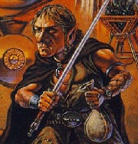

DUERGAR

Так же как и свирфы, дуергары, или темные карлики, пришли в этот мир из
Underdark'а. Как и их родичи с поверхности, дуергары сильные создания, хотя
выбранный ими путь зла изменил их несколько с другой стороны. В отличие от
свирфов, дуергары не работали с камнем и металлом, что со временем сделало их
менее крепкими. За века занятия воровством они стали более проворными.
Все дуергары имеют злой характер.
Базовый экспириенс для Темнык Карликов:
Witch = 1250 Cleric = 1250 Thief = 1250 Warrior = 1250
AntiPaladin = 1550 Necromanser = 1550